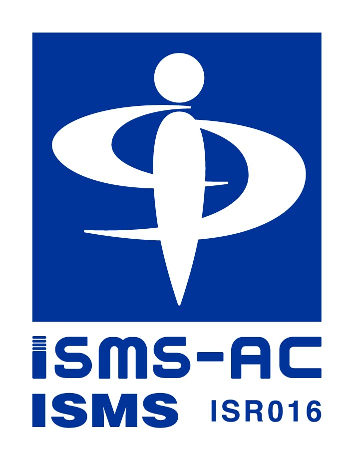
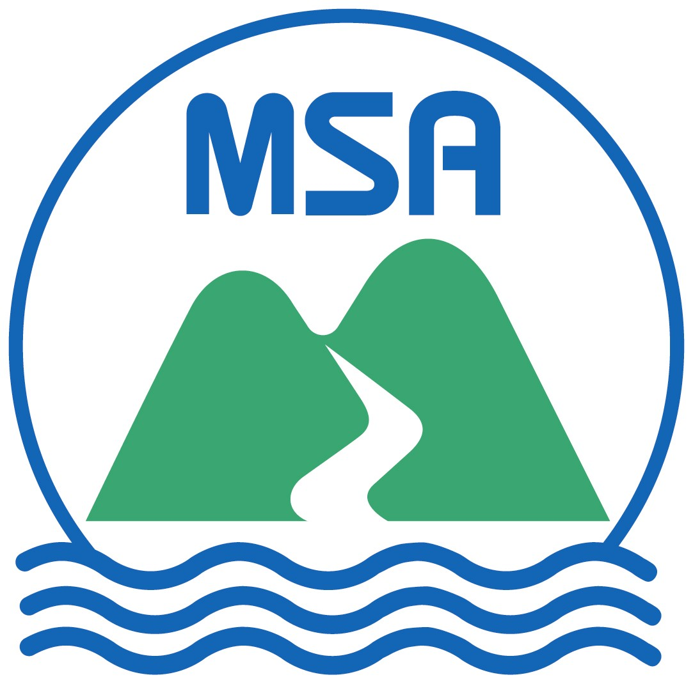

機微な音声データを守る
通話内容には顧客の個人情報や取引情報が含まれます。ローカル AI 構成に加え、ISMS に基づく運用管理で多層的に保護します。
xVoice を提供する株式会社カイゼンテクノロジは、情報セキュリティマネジメントシステム
（ISMS／ISO/IEC 27001）の認証を取得しています。


お客様の情報資産を安全にお預かりするため、国際規格 ISO/IEC 27001（JIS Q 27001）に準拠した情報セキュリティマネジメントシステム（ISMS）を構築・運用しています。
組織が保有する情報資産を、機密性・完全性・可用性の3つの観点からバランスよく維持・改善するためのマネジメントの仕組みです。
許可された人だけが情報にアクセスできる状態を維持します。アクセス権限の管理・暗号化・物理的セキュリティを徹底します。
情報が改ざん・破壊されず、正確かつ完全な状態で保たれるよう、変更管理・バックアップ・監査ログによる統制を行います。
必要なときに、必要な人が、必要な情報を利用できる状態を維持します。冗長構成・事業継続計画（BCP）で支えます。
お客様からお預かりした情報資産を守り、安心してご利用いただけるサービスを提供するため、以下の方針に基づき情報セキュリティに取り組みます。
経営層が率先して情報セキュリティの重要性を認識し、ISMS の確立・実施・維持・継続的改善に必要な経営資源を提供します。
情報セキュリティに関する法令、規制、契約上の要求事項、その他社会的規範を遵守します。
取り扱う情報資産を識別・分類し、リスクアセスメントの結果に基づいて適切なセキュリティ対策を実施します。
役員・従業員に対し、情報セキュリティに関する教育・訓練を継続的に実施し、組織全体のセキュリティ意識を高めます。
情報セキュリティインシデントの発生に備えた体制を整備するとともに、定期的な内部監査とマネジメントレビューを通じて ISMS を継続的に改善します。
xVoice は通話・音声・顧客情報という、企業にとって極めて機微なデータを取り扱います。
だからこそ、第三者認証によって裏付けられた管理体制が不可欠です。
通話内容には顧客の個人情報や取引情報が含まれます。ローカル AI 構成に加え、ISMS に基づく運用管理で多層的に保護します。
独立した認証機関による定期的な審査を受けることで、組織のセキュリティ管理が客観的に評価され、お客様へ透明性をお届けします。
PDCA に基づく運用で、最新の脅威や法令改正に追従。ISMS の枠組みでセキュリティを「導入して終わり」にしません。
多くの企業・自治体が情報システム導入時の選定基準として ISMS 認証を求めています。導入検討時の社内承認をスムーズに進められます。